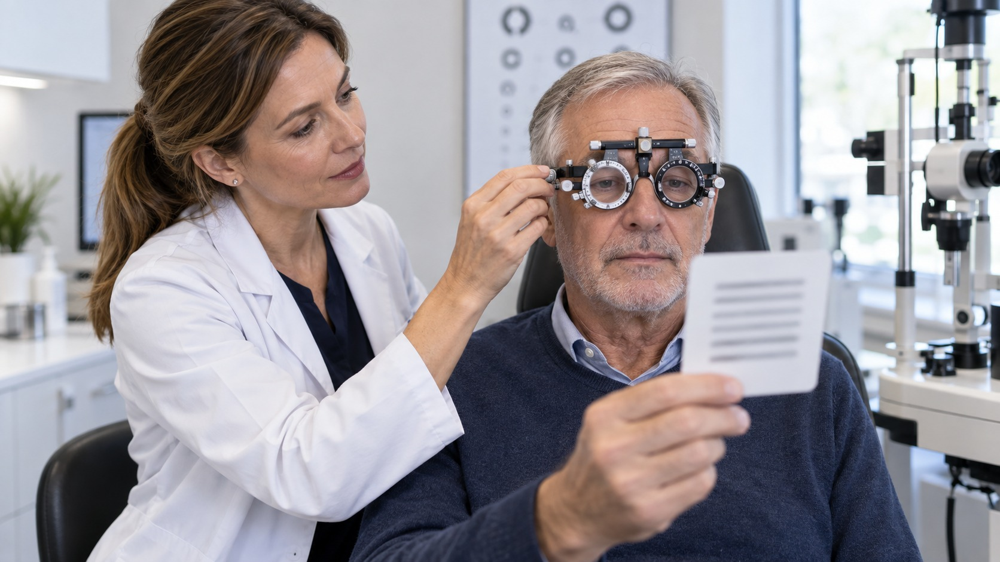
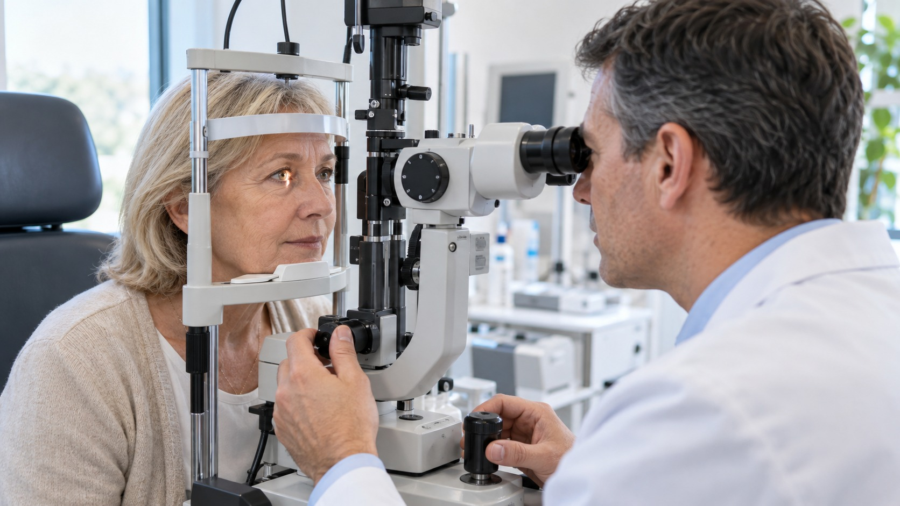

Szybka odpowiedź
Okulary do czytania poprawiają ostrość z bliska i nie osłabiają oczu. Prezbiopia wynika głównie z wieku soczewki i jej malejącej zdolności do zmiany kształtu; ćwiczenia nie przywracają tej elastyczności. Reguła 20-20-20 może zmniejszać zmęczenie przy ekranie, ale nie leczy prezbiopii. Nagła utrata widzenia, błyski lub „zasłona” wymagają pilnej oceny okulistycznej.
Kluczowe wnioski
- Noszenie właściwie dobranych okularów nie przyspiesza pogorszenia wzroku ani nie „rozleniwia” oka.
- Ćwiczenia konwergencji mogą mieć zastosowanie w określonych zaburzeniach obuocznych, lecz nie cofają starzenia soczewki.
- Gotowe okulary o tej samej mocy w obu szkłach nie korygują astygmatyzmu ani różnicy między oczami.
- Nowe błyski, liczne męty, zasłona lub nagłe pogorszenie widzenia wymagają pilnej pomocy.
Dlaczego po 50-tce tekst odsuwa się od oczu?
Prezbiopia rozwija się, gdy soczewka oka z wiekiem traci elastyczność i gorzej zwiększa moc optyczną do patrzenia z bliska. Litery stają się wyraźniejsze po odsunięciu, a przy słabym świetle szybciej pojawia się zmęczenie. To częsty proces związany z wiekiem, lecz badanie powinno wykluczyć inne przyczyny pogorszenia widzenia.
Kontrole wzroku warto umieścić w szerszym planie opisanym w badaniach profilaktycznych po 50-tce.
Czy okulary do czytania osłabiają oczy?
Nie. Soczewki okularowe załamują światło tak, aby obraz ogniskował się prawidłowo na siatkówce. National Eye Institute podkreśla, że okulary nie zmieniają oka i nie powodują jego osłabienia. Wrażenie pogorszenia po zdjęciu szkieł wynika zwykle z porównania z wyraźnym obrazem albo postępu prezbiopii.
Jeżeli każde oko potrzebuje innej korekcji lub występuje astygmatyzm, gotowe okulary z drogerii nie zastąpią indywidualnej recepty.

Co mogą dać ćwiczenia i przerwy od ekranu?
Przenoszenie wzroku w dal, częstsze mruganie i przerwy mogą ograniczać suchość oraz napięcie podczas długiej pracy z bliska. Reguła 20-20-20 oznacza spojrzenie co 20 minut przez około 20 sekund na obiekt oddalony o 20 stóp, czyli około 6 metrów. Nie ma jednak podstaw, by obiecywać cofnięcie prezbiopii.
Dla ogólnego zdrowia ważniejsze są regularny ruch i sen; ich praktyczny plan znajdziesz w poradniku snu po 50-tce. Mechanizmy szybkich ruchów oka wyjaśnia osobny artykuł o sakadach i percepcji wzrokowej.
Kiedy okulary z półki nie wystarczą?
Badanie jest potrzebne, gdy obraz pozostaje nieostry mimo korekcji, jedno oko widzi wyraźnie gorzej, występuje ból, podwójne widzenie lub częste bóle głowy. Nagłe błyski, wysyp nowych mętów, ciemna zasłona albo nagła utrata widzenia wymagają pilnej oceny, bo nie są typowym objawem zwykłej prezbiopii.

Nie zwiększaj kolejnych mocy tylko po to, by zagłuszyć nowy objaw. Różnicę między korekcją a eksperymentalnym leczeniem oka pokazuje analiza terapii ER-100.
| Sytuacja | Rozsądny krok | Czego nie obiecywać? |
|---|---|---|
| Stopniowo gorsze czytanie | Badanie i właściwa korekcja | Że ćwiczenia cofną prezbiopię |
| Suchość przy ekranie | Przerwy, mruganie, ocena powierzchni oka | Że mocniejsze szkła rozwiążą suchość |
| Różnica między oczami | Indywidualna refrakcja | Że gotowe szkła będą wystarczające |
| Błyski, zasłona, nagła utrata | Pilna ocena okulistyczna | Że to zwykłe starzenie |
Okulary nie przegrywają walki z okiem — po prostu kompensują zmianę optyczną, której ćwiczenie nie potrafi cofnąć.
Najczęściej zadawane pytania
Czy okulary do czytania pogarszają wzrok?
Nie. Poprawiają ostrość podczas noszenia, ale nie zmieniają oka ani nie przyspieszają prezbiopii.
Czy ćwiczenia oka mogą cofnąć prezbiopię?
Nie wykazano, aby przywracały elastyczność starzejącej się soczewki; mogą jedynie zmniejszać część dolegliwości pracy z bliska.
Jak dobrać moc gotowych okularów?
Najbezpieczniej po badaniu, szczególnie gdy oczy różnią się, występuje astygmatyzm, ból głowy lub choroba oka.
Kiedy potrzebna jest pilna pomoc?
Przy nagłej utracie widzenia, zasłonie, błyskach, wysypie nowych mętów, silnym bólu oka lub objawach neurologicznych.
Źródła
- National Eye Institute - eyeglasses
- National Eye Institute - presbyopia
- AAO EyeWiki - presbyopia
- Cochrane review - convergence insufficiency interventions
- American Optometric Association — reguła 20-20-20 i cyfrowe zmęczenie wzroku
- National Eye Institute — objawy odwarstwienia siatkówki i pilna pomoc
Uwaga: Artykuł ma charakter informacyjny i edukacyjny. Nie zastępuje konsultacji, diagnozy ani indywidualnego leczenia.